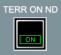
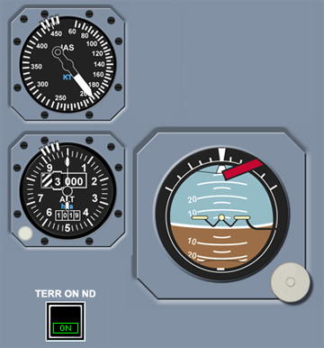

Warning Lights, Switches and Buttons
Terrain on ND Switch
ON - When the TERR ON ND switch is selected ON, the ON light illuminates green and displays terrain data on the respective Navigation Display.
OFF - When the TERR ON ND switch is selected OFF, the light extinguishes and the weather radar data is displayed on the respective Navigation Display. In the Airbus configuration the TERR ON ND switch must be manually deselected in order to display weather.
|  |